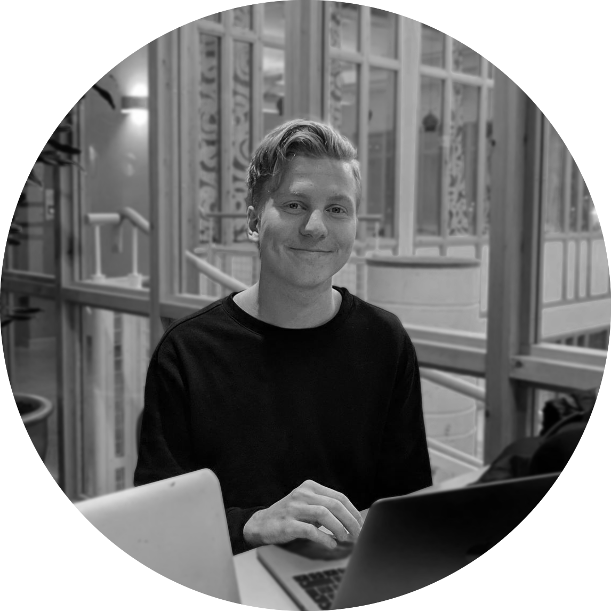

Här är en liten kort text som är bra!
Hej! Oscar Heimdahl heter jag och går fjärde året på
Civilingenjörsutbildningen interaktion och design i Umeå. Jag har
alltid gillat datorer att ge saker struktur och ordning. Under min
utbildning har jag kommit i kontakt med flera olika arbetssätt inom
design och programmering, något jag lärt mig uppskatta och använda
dagligen. Då min utbildning till stor del går in på både design och
programmering så har jag en väldigt bred kompetens på många områden.
Det ger mig förmågan att kunna kommunicera med båda datorvetare och
designers, och även kunna agera som en bro mellan dem. Jag föredrar
programmering i dagsläget och siktar på att bli en front-end
utvecklare.